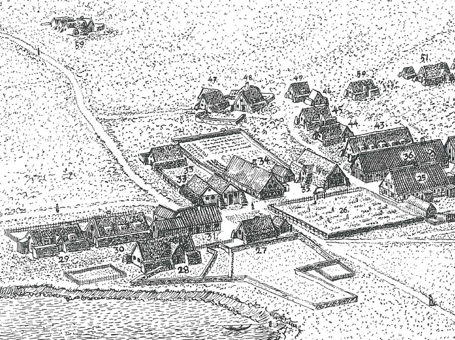
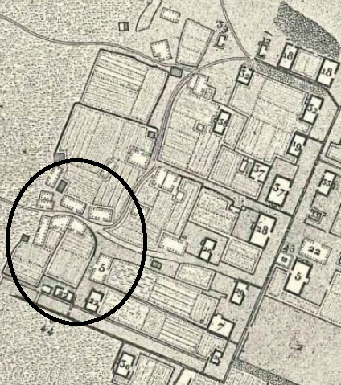
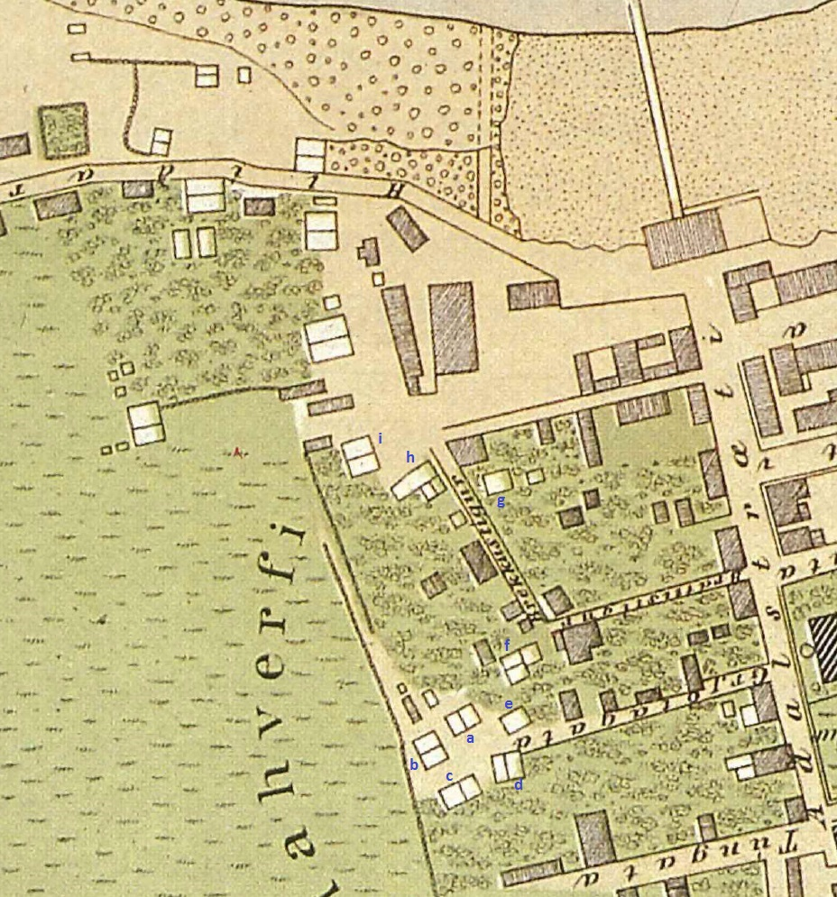

1801
Teikning Aage Olsen Aanum af Kvosinni og syðri hluta Grjótaþorpsins byggð á kortum frá 1801 og öðrum samtímaheimildum. Svæðið er kennt við bæinn Grjóta, eina af hjáleigum Víkur (Reykjavík). Bæirnir í kringum Grjóta voru nefndir Grjótabæir, þótt þeir hafi allir haft eigin nöfn, reyndar stundum fleiri en eitt, enda oft kenndir við þann sem þar bjó. Bæirnir eru:
- 33: Richdalsbær
- 35: Gröndalsbær
- 44: Hóll
- 45: Grjóti
- 46: Óvíst (gæti verið skemma)
- 47: Helgabær
- 48: Ásmundarbær
- 49: Vaktarabær
- 50: Hákonarbær
- 51: Brekkubær
Númer 59 má sjá torfbæinn Götuhús sem líka var ein af hjáleigum Víkur. Stígurinn hjá bænum liggur að Landakoti og þaðan út á Seltjarnarnes að Nesstofu þar sem landlæknir bjó og apótekið var til húsa.

Kvosin og syðri hluti Grjótaþorps1801

Kort eftir V. Lottin1836
1836
Grjótaþorpsbæirnir afmarkast af götunum Aðalstræti, Vesturgötu, Garðastræti og Túngötu eins og þær liggja í dag. Á þessu svæði bjó mikið af fátæku tómthúsfólki sem langflest bjó í torfbæjum langt fram eftir nítjándu öld. Yfirlitsmyndin er hluti af korti sem V. Lottin útbjó árið 1836.
Hægra megin skáhallt á myndinni er Aðalstræti og neðst sést stígur sem lá upp að Landakoti og seinna varð Túngata.
Grjóti og svonefndir Grjótabæir eru innan hringsins. Auk Grjóta eru það: Helgabær, Richdalsbær, Finnbogabær, Hóll, Birgittubær, Sandholtsbær og Vaktarabær.
Aðrir torfbæir í Grjótaþorpinu á þessum tíma voru Gröndalsbær, Hákonarbær og Brekkubær. Norðar í Grjótaþorpinu stóðu torfbæirnir Arabær, Hákot, Borgarabær, Þorfinnsbær (Höltersbær), Vigfúsarkot, Hóll (Hólkot) og Sjóbúð.
Árið 1802 var búið í 19 húsum í Grjótaþorpi og íbúarnir voru 141. Um 20 torfbæir voru í Grjótaþorpi árið 1836 en eftir það fór þeim fækkandi. Um aldamótin 1900 var búið að rífa alla torfbæi í Grjótaþorpi og byggja timburhús í staðinn.
Réttilega má kalla Grjótaþorp fyrsta úthverfi Reykjavíkur.
1876
Kort Sveins Sveinssonar af Grjótaþorpi og næsta umhverfi frá 1876. Sjá má helstu götur eða götuslóða, sem enn í dag hafa að mestu sömu heiti og liggja eins. Búið er að merkja með bókstöfum torfbæi í suðurhluta Grjótaþorps sem eru Grjótabæirnir og bæir sem stóðu þar sem nú er Mjóstræti, en taldist þá hluti af Brekkustíg. Bæirnir eru:
- a: Grjóti
- b: Vaktarabær
- c: Helgabær eða Ásmundarbær
- d: Richdalsbær
- e: Hóll
- f: Hákonarbær
- g: Brekkubær
- h: Arabær
- i: Hákot
Norðar á myndinni má sjá nokkra torfbæi til viðbótar (ljósmerktir). Vigfúsarkot og í framhaldi Hóll (Hólkot) við Hlíðarhúsastíg (Vesturgötu). Norðan við Hlíðarhúsastíg gegnt Hól er Helluland, sem þótti eitt alaumasta kotið í Reykjavík. Vestan megin við Hól eru bæirnir Gróubær og Dúkskot þar sem í dag er Garðastræti.

Kort eftir Svein Sveinsson1876

Reykjavík séð frá Hólavallatúnium 1840
um 1840
Teikning sem sýnir Reykjavík séð frá Hólavallatúni (milli Garðastrætis og Hávallagötu). Myndin sýnir Reykjavík nálægt árinu 1840. Örin hægra megin bendir á Grjótabæina, en örin vinstra megin á bæi sem stóðu norðar í Grjótaþorpi nær Vesturgötu. Lengst til vinstri má sjá Hlíðarhús með þremur burstum. Esjan sést í bakgrunni, talsvert ólík raunveruleikanum.